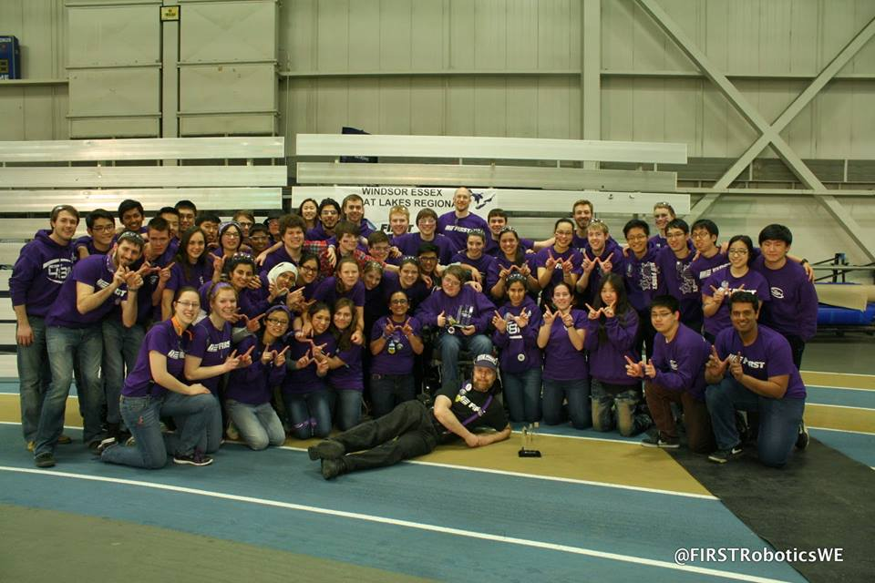

Team 4814 was first established during the 2012-2013 school year, when students from London Central Secondary School and Oakridge Secondary School joined together to create a single FRC Team. The team was started by the WE FIRST club because of a lack of support within the schools. With the joint assistance of Eugen Porter, Founder of the WE Mars Club at Western University, and the university student mentors, they successfully built the team’s first robot. Eugen Porter has now won the Woodie Flowers Award at Ontario Provincials in 2018, an award given to an outstanding mentor on one FRC team
History
 Eugen Porter, Woodie Flowers Finalist!
Eugen Porter, Woodie Flowers Finalist!
That inaugural year, Team 4814 won the Greater Toronto West Regional, going on to place in the top 8 at the World Championships. Throughout the year students learned about innovation first-hand by building, enhancing, and reworking the robot. The hard work and tireless effort of all members, as well as the support of sponsors allowed Team 4814 to achieve one of the best rookie years in FIRST history.
In 2014, Team 4814 was awarded the “Gracious Professionalism” award for helping the other teams and demonstrating good sportsmanship throughout the competition. Members from Oakridge went on to reform team 3739 and were replaced by students from Sir Frederick Banting Secondary School.
In 2016, Team 4814 competed all the way to the semi-finals and was awarded the “Excellence in Engineering” award because of our innovative Camera overlay mechanism. That year, members from Banting Secondary School formed team 5870, League of Logic.

In both 2017 and 2018, Team 4814 made it to the FRC World Championships. In 2017, students from we won Finalists at the Waterloo Regionals and placed first at the first ever Ontario District Championships. That year, members from A.B. Lucas Secondary School went to create team 6854, Viking Robotics. In 2018, we were finalists at the Ontario District Championships. This year, we have also had a successful season, being the winners of the Western Regional competition and placing in the Quarterfinals of the Ontario District Championships.